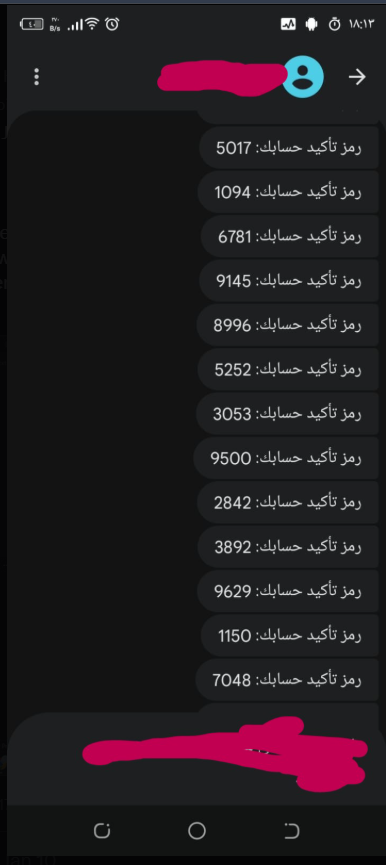
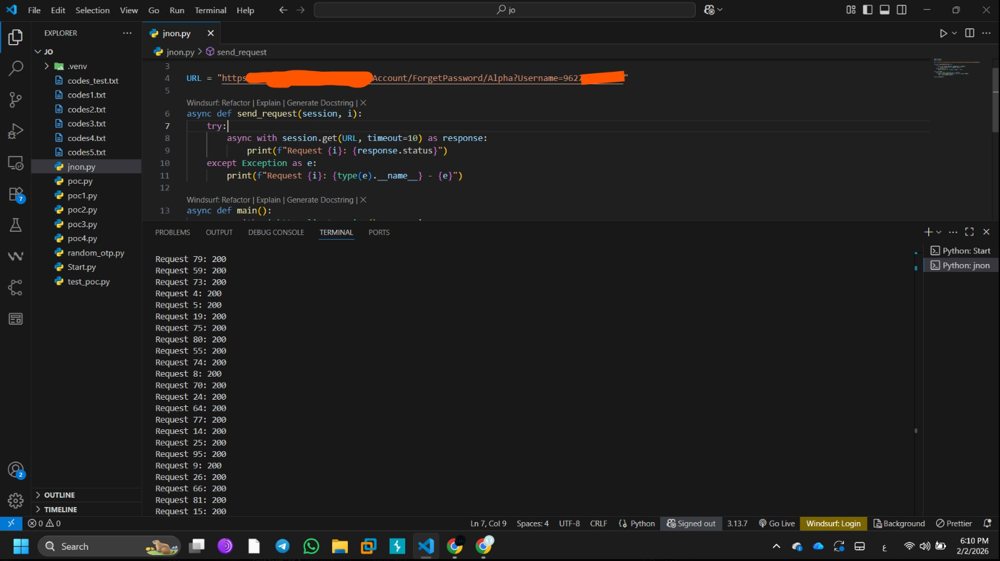

عندما يصبح رمز OTP مجرد رقم: طريق هادئ للاستيلاء على الحسابات
السلام عليكم،
اليوم حاب أشارككم قصة وتحليل أمني يوضح كيف يمكن لرمز OTP، الذي اعتدنا اعتباره خط دفاع قوي، أن يتحول إلى ثغرة خطيرة إذا بُني على منطق برمجي خاطئ.
من أين بدأت القصة؟
أثناء فحصي للنظام، أول شيء لفت انتباهي أن رمز OTP مكوّن من أربعة أرقام فقط.
الوقت الذي يُفترض أن يحميك... أصبح ضدك
مدة صلاحية الرمز كانت ربع ساعة. بحد ذاتها، هذه ليست مشكلة كبيرة. لكن خلال هذه الدقائق الخمس عشرة، كان بإمكانك طلب أكثر من رمز، والغريب في الأمر؟ أن الرموز القديمة لا يتم إلغاؤها.
بمعنى أنه بدلاً من امتلاك رمز واحد صالح، ينتهي بك الأمر مع مجموعة من الرموز الصالحة في الوقت نفسه. وهنا يتوقف OTP عن كونه رمزاً يُستخدم لمرة واحدة (One-Time Password).
المشكلة مش بالرقم… المشكلة بالمنطق
اللي بصير هون مش ضعف تخمين، ولا سرعة، ولا ذكاء خارق. اللي بصير هو إن:
- ما في حدّ لمحاولات التحقق.
- ما في ربط حقيقي بين الرمز والمحاولة.
- ما في إلغاء فوري بعد الاستخدام.
- وما في منطق يقول: "وقف، هذا خطر".
حتى وجود Cloudflare ما غيّر شي. ببساطة، الحماية الخارجية لا تستطيع إصلاح منطق داخلي مكسور.
النتيجة؟
لم يحدث شيء بشكل مفاجئ. ولم يكن هناك هجوم عنيف أو معقد. لكن ما حدث كان أخطر من ذلك. مع مرور الوقت، ونتيجة تكرار قرارات برمجية بسيطة، اكتشفت أنه خلال فترة الصلاحية نفسها، كان النظام قادراً على إنشاء عدد هائل من رموز OTP. وكان كل رمز منها يُعتبر صالحاً.
بمعنى أبسط؟ لم يكن الأمر متعلقاً برمز واحد أو اثنين، بل بآلاف الرموز في الوقت نفسه، وجميعها مقبولة من النظام. وهنا تكمن المشكلة الحقيقية.
لماذا هذه النقطة خطيرة؟
لأنك عندما تصل إلى مرحلة يصبح فيها:
- الرمز لا يُلغى عند إنشاء رمز جديد.
- الرمز غير مرتبط بمحاولة تحقق واحدة.
- الرمز لا تنتهي صلاحيته فور استخدامه.
فإن OTP يتوقف عن كونه وسيلة حماية، ويتحول إلى نقطة ضعف في آلية التحقق من هوية المستخدم.





 02 — إثبات تنفيذ الكود في البحث و"نبذة عني"
02 — إثبات تنفيذ الكود في البحث و"نبذة عني"